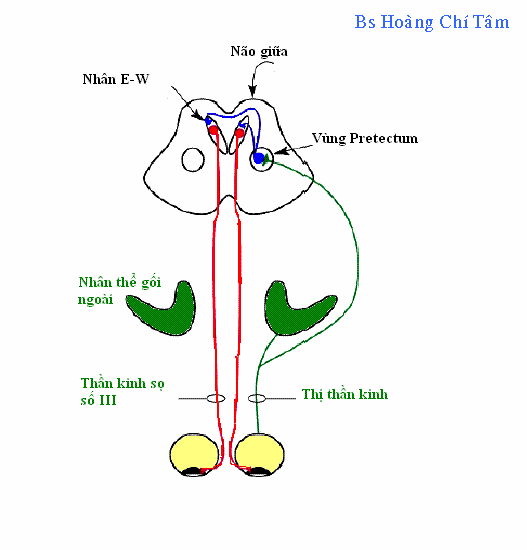

RAPD
*
Định nghĩa:
+ Viết tắt: Relative Afferent Pupillary
Defect
+ Tổn thương phản xạ hướng tâm đồng tử.
Một sự khiếm khuyết phản xạ đồng tử đặc trưng bởi sự co nhỏ hơn của đồng tử
2 bên khi mắt bị tổn thương được kích thích bằng ánh sáng được so sánh với
trạng thái tương tự khi mắt bình thường được kích thích. Tuy nhiên, dễ dàng
quan sát hiện tượng này hơn khi chuyển nguồn sáng từ mắt này sang mắt kia
trong phòng tối trong lúc bệnh nhân đang định thị với một vật ở xa. Sự kích
thích ở mắt bình thường sẽ tạo nên sự co đồng tử hai mắt, ngược lại, sự kích
thích nhanh ở mắt tổn thương sẽ dẫn đến dãn đồng tử nhẹ (một đáp ứng ngược,
đôi khi được cho là đồng tử "quên" phản xạ). Bệnh lý này do bởi tổn thương ở
thị thần kinh một mắt gây khiếm khuyết đường phản xạ đồng tử hướng tâm. Nó
thường là hậu quả của xơ cứng đa ổ hoặc viêm thị thần kinh hoặc viêm thị
thần kinh hậu nhãn.
*
Khám lâm sàng:
(Ví dụ mắt Trái bị tổn thương)
+
Bệnh nhân ngồi trong phòng tối, hoặc điều kiện ánh sáng ít, lúc này đồng tử
2 mắt sẽ dãn (hình A)
+
Dùng đèn khám chiếu sáng vào mắt bên phải, đồng tử sẽ co lại và theo phản
xạ, thì đồng tử mắt bên trái cũng đồng thời co nhỏ (hình B).
+
Chuyển đèn khám sang mắt trái, đồng tử mắt bên này chỉ co nhẹ, có xu hướng
dãn ra ít, quan sát mắt bên phải, đồng tử không co nhỏ như kích thích ở hình
B. (hình C)
+
Chuyển ánh chiếu sáng qua mắt phải một lần nữa (hình D) ta sẽ thấy đồng tử 2
mắt co nhỏ.
Kết luận: Mắt trái bị tổ thương và mất phản xạ hướng tâm đồng tử.

Hình: Mô tả khám phản xạ
hướng tâm đồng tử
*
Cơ chế:
+
Xem hình

Phản của mắt với xạ ánh
sáng được thực hiện qua trung gian của hệ thần kinh tự động. Đường hướng tâm
của phản xạ này liên quan với võng mạc và thị thần kinh. Những sợi thần kinh
trong thị thần kinh tỏa ra song song đến
nhân pretectum,
từ nhân này, những sợi thần kinh chạy đến
cả hai bên nhân Edinger-Westphal,
phần nhân vận động (dây thần kinh số III), hình thành những liên lạc với
những sợi thần kinh của dây III là hoạt động phó giao cảm. Những sợi này nối
vào lại hạch mi để dẫn truyền xung thần kinh đến cơ co đồng tử.
Chính vì có
2 nhánh đến nhân E - W,
nên giải thích tại sao khi chiếu ánh sáng vào mắt bình thường (trong ví dụ
trên là mắt phải) thì mắt bị tổn thương (trái) có phản xạ liên ứng - co đồng
tử. Trong khi đó nếu như đường hướng tâm tức là dẫn truyền từ võng mạc đến
vùng Pretectum bị tổn thương bên mắt trái, nó không có khả năng dẫn truyền
kích thích đến nhân E - W và dẫn truyền xung thần kinh sang hạch mi mắt đối
bên để gây phản xạ đồng tử.